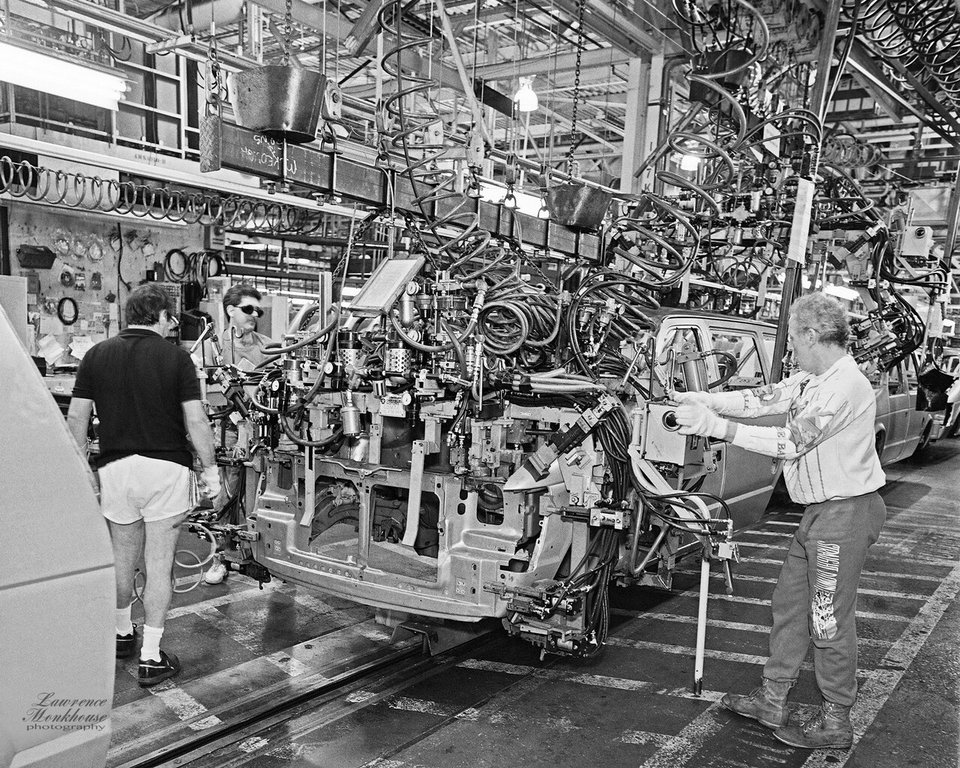
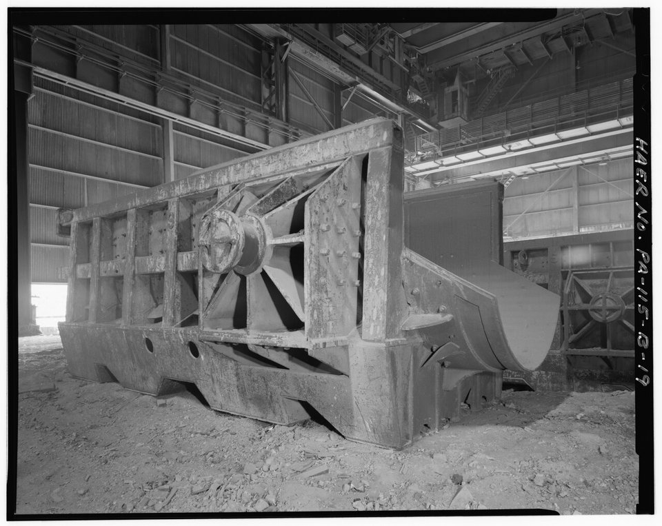
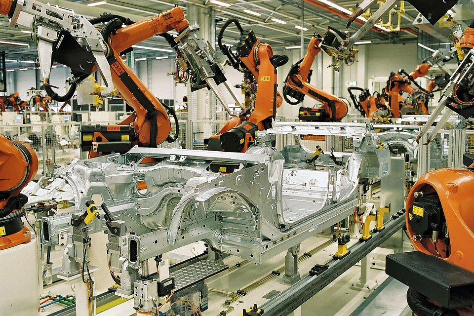

ADVANCED MOBILITY · AUTOMOTIVE STEEL · CSC
中鋼 IF 汽車用鋼 RC30：把三成廢鋼煉進汽車外板
鋼鐵潮流工作室 · 發布 2026.10.06

本期重點
IF 鋼是汽車外板的主力材料，對鋼液清淨度與碳、氮控制要求極嚴，過去在轉爐中只能添加約一成廢鋼。中鋼發展轉爐增用廢鋼技術，把 IF 鋼的轉爐廢鋼比從約 10% 提高到 30%，2025 年 11 月「IF 汽車用鋼 RC30」取得經濟部資源再生綠色產品認證。高再生料鋼品 2025 年接單 8.3 萬噸、年增 68%，2026 年前 8 月接單近 7.4 萬噸、年增約五成。
- RC30 是什麼：RC（Recycled Content）代表再生料含量，RC30 即鋼材內含 30% 廢鋼；溫室氣體排放比非 RC 鋼材約低 15%。
- 技術突破：以「轉爐熱能補償」、「大量廢鋼快速熔化」、「二次精煉升溫」三項技術，克服大量廢鋼在轉爐中的熱平衡與鋼液調控難題。
- 認證：IF 汽車用鋼 RC30 取得經濟部資源再生綠色產品認證，鍍鋅產品取得 UL 2809 RC30 驗證；中鋼累計取得 14 張 UL 2809 證書。
- 布局：高再生料產品由 RC12 延伸到 RC90，應用從家電、伺服器擴展到汽車鈑金、電動車馬達、扣件與車體結構。
關鍵數字
IF 鋼是什麼
IF 鋼（Interstitial-Free，無間隙原子鋼）是把碳、氮含量壓到極低，再加入鈦、鈮等元素，把殘餘的碳、氮原子固定成化合物，使鐵的晶格中幾乎沒有「間隙原子」。少了這些阻礙差排移動的原子，鋼材變得非常柔軟、延展性極佳，可以沖壓成深而複雜的形狀，而且不會因時效硬化產生沖壓紋路。
中鋼說明，IF 鋼屬極低氮鋼種，具備優異的深衝性及延展性，表面品質亦佳，適合加工為複雜的汽車內外板件，例如側圍外板、後輪罩內板、前翼子板等。這類外露件一點表面瑕疵都會在烤漆後被看見，因此生產 IF 鋼必須符合高清淨度鋼液的要求。
為什麼在 IF 鋼加廢鋼很難
- 熱量不足。 高爐轉爐流程靠鐵水中的碳、矽氧化放熱來熔化廢鋼。廢鋼加得越多，吸走的熱越多，爐內熱平衡越難維持。
- 殘留元素。 廢鋼中的銅、錫等元素在煉鋼時去除不了，會影響深衝性與表面品質；外露的汽車外板對此特別敏感。
- 極低碳、氮控制。 IF 鋼需要精準控制碳、氮等殘留元素，並經真空脫氣處理；多加廢鋼會改變爐內熱量與成分，後段精煉的溫度與時間都更吃緊。
中鋼說明，正因為鋼液清淨度與碳、氮控制的要求，這類高成形性鋼材過去在轉爐製程中能添加的廢鋼比例僅約 10%。
中鋼的解法是三項製程技術：「煉鋼轉爐熱能補償」補足多加廢鋼所需的熱量，「大量廢鋼快速熔化」縮短熔化時間，「二次精煉升溫」確保精煉段溫度足夠，克服熱平衡與鋼液調控的難題，把 IF 鋼的轉爐廢鋼添加比例從約 10% 提升到 30%。

減碳效果：再生料越高，碳排越低
RC30 的減碳幅度看似不大，但它是在高爐轉爐流程中、且用在對鋼液清淨度要求很高的汽車外板上做到的。再生料比例更高的產品，則搭配電爐製程：中鋼子公司中龍鋼鐵以電爐鋼液直送連鑄，生產再生料含量 67% 的扁鋼胚與熱軋鋼捲，2024 年 9 月取得 UL 2809 驗證。中鋼法說會資料也顯示，再生料最高的 RC90 冷軋與鍍鋅產品，是中鋼與中龍以電爐製程合作開發。
發展歷程
- 2021SGCC RC12 取得 UL 2809 驗證
- 2022RC12 銷售訂單近 9,000 噸
- 2022.12SGCC RC20 通過 UL 2809 審查
- 2023.03SGCC RC40 取得 UL 2809 驗證
- 2024.09中龍電爐扁鋼胚、熱軋鋼捲取得 RC67 驗證
- 2025.11IF 汽車用鋼 RC30 取得經濟部綠色產品認證
- 2025全年接單 8.3 萬噸，年增 68%
- 2026.08前 8 月接單近 7.4 萬噸，年增約 5 成
車用產品布局
| 應用 | 產品 | 再生料 | 狀態 |
|---|---|---|---|
| 車身鈑金（內外板） | IF 汽車用鋼 | RC30 | 已量產 |
| 電動車馬達鐵芯 | 電磁鋼捲 | RC30 | 已取得 UL 2809 驗證；廢鋼占比增加約 20% |
| 高強度扣件（汽車螺栓） | SCM435 條線 | RC60 | 完成開發驗證 |
| 車體結構件 | HX420LAD 等級鋼材 | RC60 | 具穩定供應能力 |
從車身外板、馬達鐵芯、螺栓到結構件，中鋼的高再生料產品已涵蓋一輛車主要的用鋼部位。中鋼表示，推動策略包括材料創新設計、製程優化與第三方認證三個面向。
銷售實績
高再生料鋼品的接單在三年內明顯放大。2026 年前 8 月接單已接近 2025 年全年的九成，若維持年增約五成的步調，全年有機會突破 10 萬噸。不過以中鋼每年千萬噸級的出貨規模來看，再生料鋼品仍屬起步階段；中鋼法說會也指出，RC12、RC20 等產品主要應用於電腦、家電、伺服器與家具，汽車是正在打開的新市場。

為什麼車廠需要再生料鋼
- 供應鏈碳排揭露。 鋼材是汽車製造碳排的主要來源之一，國際車廠陸續要求供應商提供產品碳足跡，並設定採購低碳材料的目標。
- 可驗證的再生料比例。 UL 2809 依 ISO 14021 驗證產品的再生料含量，經濟部資源再生綠色產品認證則提供國內的官方背書，讓車廠能把再生料比例寫進採購規格與永續報告。
- 碳邊境機制。 歐盟碳邊境調整機制（CBAM）2026 年進入正式收費期，出口到歐洲的鋼材與下游產品，碳排強度將直接反映在成本上。
觀察重點
- IF 汽車用鋼 RC30 打入國內外車廠的進度，以及是否推進到更高再生料比例。
- 2026 年高再生料鋼品全年接單能否突破 10 萬噸。
- 廢鋼價格與優質低銅廢鋼的取得，是否限制轉爐增用廢鋼的規模。
- 中龍電爐與中鋼轉爐的分工，以及 RC60、RC90 產品在汽車領域的應用。
- 國際車廠低碳鋼採購規範與再生料計算方式的演變。
延伸閱讀
資料來源
- 中鋼「IF汽車用鋼RC30」榮獲經濟部資源再生綠色產品認證（經濟日報，2025-11-24）
- AI淨零／中鋼再生料鋼材拓車用市場 前8月接單量年增約5成（中央社，2026-09-22）
- 中鋼再生料鋼材全面布局汽車產業 攜手產業鏈邁向低碳永續（聯合報，2026-09-22）
- 中鋼再生鋼材出貨年增5成 全面布局汽車產業（鉅亨網，2026-09-22）
- 中鋼高再生料鋼攻進汽車供應鏈 接單8個月近7.4萬噸（風傳媒）
- 攻入車體與馬達！中鋼低碳鋼接單爆發 前8月大增5成（三立新聞，2026-09-23）
- 中鋼鍍鋅鋼品 SGCC RC20 通過 UL 2809 驗證（NOWnews，2023-01-11）
- 中鋼鍍鋅鋼品 SGCC RC40 通過 UL 2809 驗證（NOWnews，2023-04-21）
- Dragon Steel obtains recycled content validation for slabs and HRC（Yieh，2024-12-06）
- 2025 年 11 月 25 日 中鋼集團聯合法人說明會簡報（中鋼）
內容僅供產業資訊參考，不構成投資建議。新聞版權屬原出處所有。